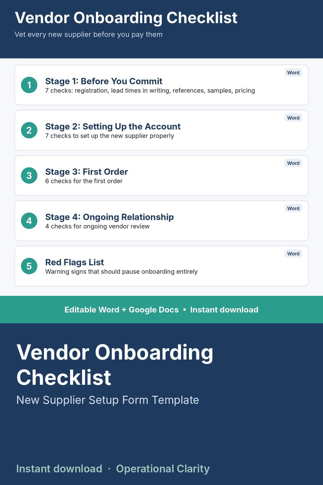

Vendor Onboarding Checklist

DON'T FIND OUT A NEW VENDOR IS UNRELIABLE AFTER YOU'VE ALREADY PAID THEM.
A complete, stage-by-stage checklist for bringing on a new supplier - from before you commit, through account setup, through the first order, to ongoing relationship review. Includes a red-flags list of warning signs that should pause onboarding entirely.
WHAT'S INCLUDED
- Stage 1: Before You Commit (7 checks)
- Stage 2: Setting Up the Account (7 checks)
- Stage 3: First Order (6 checks)
- Stage 4: Ongoing Relationship (4 checks)
- Red Flags list - warning signs to pause onboarding
FORMATS INCLUDED
- Word file (.docx) - fully editable checkboxes
- Google Docs version
WHO THIS IS FOR
Small business owners and purchasing staff who want a repeatable process for vetting new vendors instead of winging it every time.
INSTANT DOWNLOAD - no physical item will be shipped. Because this is a digital product, all sales are final.